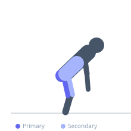
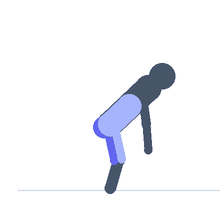

Exercise guide / Smith Machine Romanian Deadlift
Smith Machine Romanian Deadlift
The Smith machine Romanian deadlift uses the guided bar path of the Smith machine to perform the hip hinge pattern. The fixed vertical track removes the need for lateral bar control, allowing the lifter to focus entirely on the hinge mechanics and hamstring stretch. It is a good option for beginners learning the RDL pattern or for those who want to train without a spotter on a hinge movement.
Primary muscles
biceps femoris long head
semitendinosus
semimembranosus
gluteus maximus
Secondary muscles
erector spinae
rectus femoris
Stabilizers
transverse abdominis
Equipment
Smith Machine


Starting position
- Set the Smith machine bar at hip height. Stand with feet hip-width apart, holding the bar with an overhand grip slightly outside hip width.
Setup
- Rotate the bar to unlock it. Stand close to the bar with it at your upper thighs.
Steps
- Step 1: Brace the core, retract the shoulder blades, and push the hips back.
- Step 2: Lower the bar along the front of the thighs in a straight path, keeping the bar close.
- Step 3: Descend until a strong stretch is felt in the hamstrings, maintaining a neutral spine.
- Step 4: Drive the hips forward to return to standing, squeezing the glutes at the top.
Coaching cues
- Bar slides down the thighs
- Push the hips back, not down
- Hamstring stretch guides your depth
Breathing
- Inhale and brace before the descent. Exhale as you drive up.
Range of motion
- Descend to mid-shin or as far as hamstring flexibility allows without spinal flexion.
Tempo
- 3-0-1-0
Common mistakes
- Lower back rounding to gain additional depth
- Bar drifting away from the legs
- Knees bending too much, turning it into a deadlift
Safety
- The Smith machine's fixed path is vertical — ensure your hinge pattern matches this for natural movement
Training
- strength: 5–10 reps
- hypertrophy: 10–15 reps
- strength: 3–4 sets
- hypertrophy: 3–4 sets
- Rest: {'strength': 120, 'hypertrophy': 90}